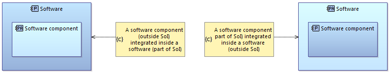

Since Capella 1.4.0, Actors are implemented in a more generic and flexible way. It is now possible to:
The purpose of this chapter is to provide guidance on taking advantage of these enhancements and on highlighting the consequences of these enhancements on LA to PA transitions.
All structural elements (actors, logical components, physical components) now have two attributes:
This new management of Actor allow a great flexibility in the distinction between scope of responsibility (i.e. whether a structural element is an actor, meaning that it is not part of the SoI) and deployment or decomposition aspects. For example, in the Physical Architecture perspective we can consider:

These different scopes of responsibility can also be defined in the Logical Architecture perspective, except for the one related to the deployment of components (as the deployment aspect is addressed in the Physical Architecture only).
Implementation resource (Node Component) is a concept introduced in the Physical Architecture in order to define the deployment aspect of the system.
Note: In Logical Architecture, the breakdown of the system is a logical breakdown. It is the equivalent of Behavioral Components in Physical Architecture.
Node Components are connected together with physical links and Behavior Components are connected together with component exchanges.
Moreover, functions are allocated to Behavior Components, and Behavior Components are deployed on Node Components.
While the distinction between Node and Behavior components is mandatory in the description of the system, it is optional for external actors. Indeed, as they are not part of the scope of interest, their definition can be simplified. As a result, this representation is allowed:
In this case, a Node Actor has the properties of both Node component and Behavior component.
Note that Physical Links can also be defined between the System and the Actors in the System Needs Analysis perspective, which permits a well-defined integration between the System and the Actor:
As a result of these enhancements, a lot of different cases can occur in the transition between Logical and Physical Architecture perspectives.
As a reminder, a transition is an accelerator used to initialize the model based on information defined in the previous perspective. After the transition, users may have to modify the result of the transition in order to consolidate the initial state of the Physical Architecture.
The LA to PA transition of components / actors is defined based on 3 different rules:
Rule 1
The breakdown of the system in Logical Architecture is a logical breakdown. It is the equivalent of Behavioral Components breakdown in Physical Architecture.
Thus, the first rule in a transition between LA and PA is to convert Logical Components into Behavior Components.
After the transition, the Behavior Components in PA will need to be deployed on Node Components.
Rule 2
The second rule is to transpose the hierarchy defined in Logical Architecture in the Physical Architecture.
In Physical Architecture, Node and Behavior need to be defined as different breakdowns. Behavior components are deployed on Node components. It is not decomposition. See the example below for the IFE sample model:
As a result, the transition will create a hierarchy of Behavior components, or a hierarchy of Node components, but will never mix them.
Rule 3
The third rule is related to the simplification of the representation of Actors. As stated above, the simplification of Actors is implemented using Node Actors.
As a result, Logical Actors (when not mixed with components in the SoI) will be converted into Node Actors to allow simple representation of the actor.
The resulting actor is a Node Component having also the properties of a Behavior Component.
When mixing System / Actor definitions in Logical Architecture, the result of the transition is to transpose the actors as Behavior Components.
This is the result of rule 1 combined with rule 2.
In this case, the user will have to deploy Physical Actor 2 on a Node Component (system or actor) after the transition, in order to complete the model definition.
“Actor 1” does not necessarily need to be deployed if “Comp 1” is deployed as a whole.
In some cases, the result of the automated transition will have to be refined by the user. It is the case of an Actor, containing a component of the system and having at least one physical link defined on it.
In this case, “Actor 1”, “Actor 1.1” and “Comp 2” are transformed into Physical Behavior Components (actor or system).
However, this representation violates one rule of Capella: Behavior components shall not have physical ports (DWF_DC_30).
As a result, user has to refine the transition into an acceptable result.